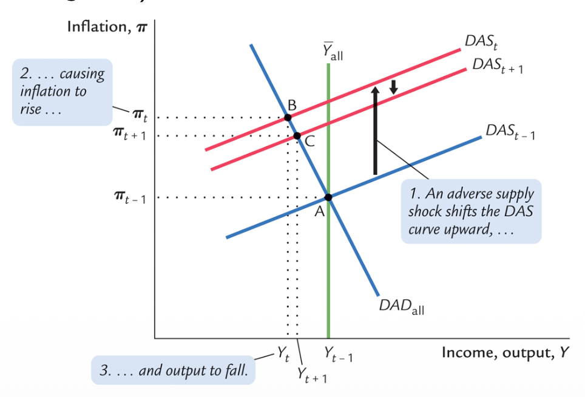
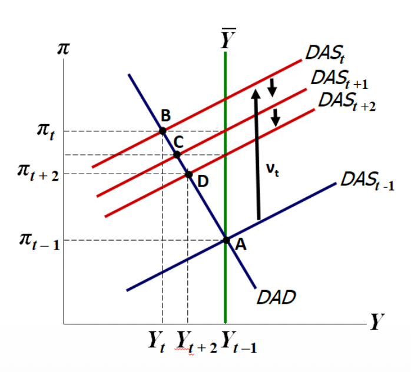
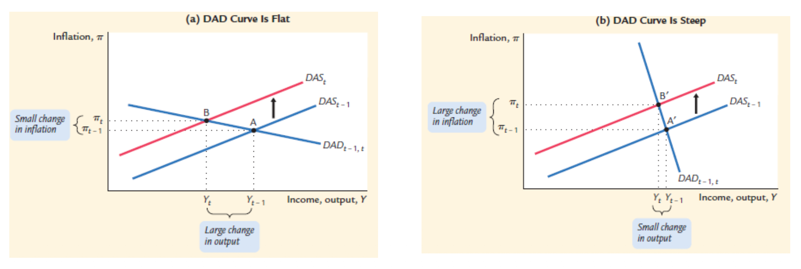
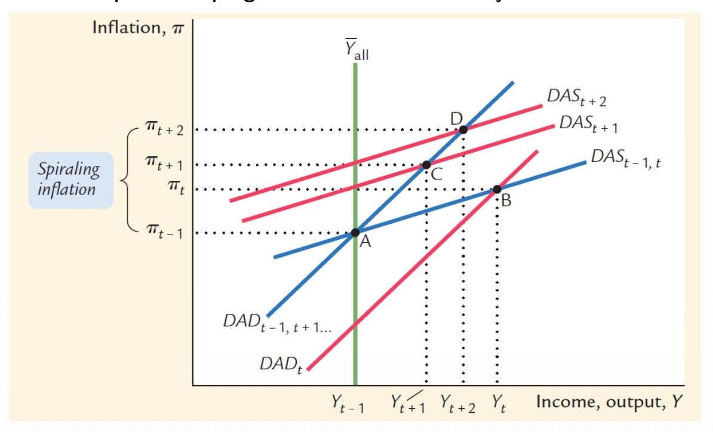
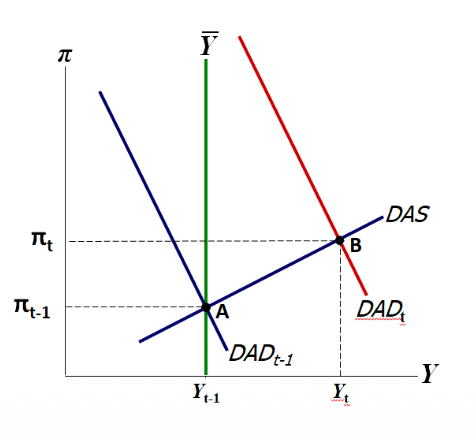
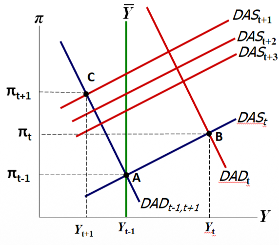
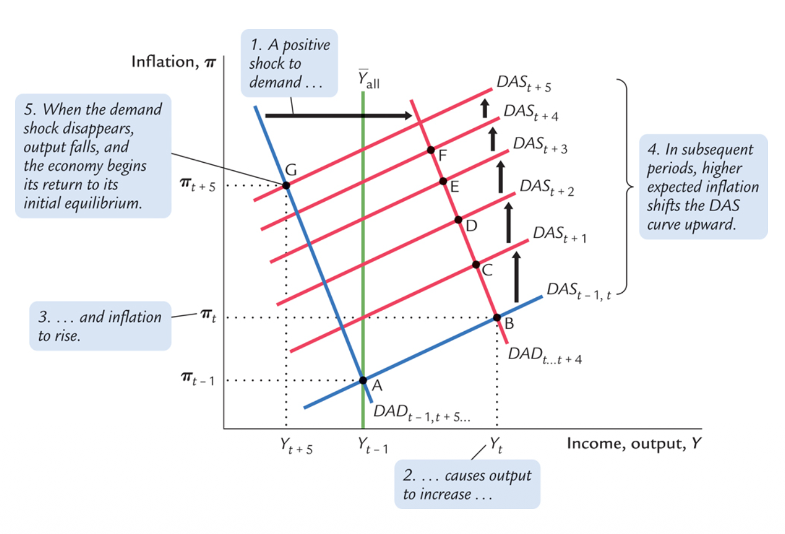

Shock Response Simulations
1. Why Simulate Shocks?
While the DAD-DAS diagram is a useful tool for showing basic shock movements, it has serious limits when we try to analyze complex behavior over time. Specifically, it only shows output and inflation, leaving the important movements of interest rates (both nominal and real) completely hidden.
Furthermore, a static drawing cannot easily show the causes of changes over multiple periods. Therefore, to truly understand the macroeconomic system, we need to use Shock Response Simulations (Impulse Response Functions). These simulations allow us to follow the step-by-step chain reaction of all variables at the same time.
Part I: Supply Shocks
A supply shock ($\nu_t$) is defined as anything that suddenly increases domestic inflation without directly increasing economic output. Real-world examples include sudden spikes in commodity prices (like an oil crisis), large-scale wage increases across the country, or skyrocketing financial costs during a banking crisis.
The Mechanics of a Supply Shock Reaction
When a supply shock hits, our model's equations trigger a step-by-step chain reaction. Here is the breakdown of that mechanism, explaining exactly why each variable shifts:
- Initial Impact: The supply shock ($\nu_t > 0$) directly increases inflation in
the Phillips curve:
$\nu_t \uparrow \implies \pi_t \uparrow$$\pi_t = \pi_{t-1} + \phi(y_t - \bar{y}_t) + \nu_t$.
- The CB Reacts: The central bank sees $\pi_t > \pi^*_t$ and increases the
nominal interest rate ($i_t$):
$\pi_t \uparrow \implies i_t \uparrow$Rule: $i_t = \pi_t + \rho + \theta_\pi (\pi_t - \pi^*_t) + \theta_y (y_t - \bar{y}_t)$.
- The Real Rate Spikes: Because $\theta_\pi > 0$, the bank raises $i_t$ by more
than the increase in $\pi_t$. This pushes the real interest rate ($r_t$)
upward:
$\Delta i_t > \Delta \pi_t \implies r_t \uparrow$Equation: $r_t = i_t - E_t\pi_{t+1}$.
- Demand Drops: In the IS curve, the higher $r_t$ reduces demand. Output $y_t$
falls below $\bar{y}_t$:
$r_t \uparrow \implies y_t \downarrow$$y_t = \bar{y}_t - \alpha(r_t - \rho) + \epsilon_t$.
The Stabilization Paradox
When a positive supply shock hits the economy, it directly increases prices. However, the actual increase in inflation is smaller than the size of the shock itself.
Why? Because the central bank reacts immediately:
- It sees inflation rising and increases nominal interest rates aggressively (Taylor Rule).
- Because the nominal rate rises more than inflation, the real interest rate increases.
- Higher real interest rates discourage consumption and investment, reducing total demand.
- This drop in demand leads to lower output (a recession).
When output is below its natural level, companies face weaker demand and cannot raise prices as easily. This puts downward pressure on inflation.
This is the "stabilization paradox": The central bank stabilizes inflation by intentionally creating a recession, and this recession is what limits the initial spike in prices.
Dynamic Adjustments: After the Initial Impact
What happens in the periods after the first shock ($t+1$, $t+2$)?
Even though the original shock ($\nu_t$) eventually disappears, inflation stays high because of Expected Inflation ($E_t\pi_{t+1}$). In the Phillips curve, inflation today depends on what people expect for tomorrow.
If people use adaptive expectations ($E_t\pi_{t+1} = \pi_t$), they remember the high inflation of the past. This "memory" keeps the DAS curve high, forcing the Central Bank to keep interest rates restrictive and keeping output low for a longer time.


The Central Bank's Difficult Trade-Off
Here is the tragic dilemma of supply shocks. To force inflation back down to the target, the Central Bank must intentionally cause a recession. They purposely create weak demand just to force companies to stop raising their prices.
The Aggressive Bank
Could the central bank theoretically stop inflation from rising at all? Yes, but they would have to raise interest rates to extremely high levels instantly (a very high $\theta_\pi$). The result would be zero inflation, but also a massive recession and huge unemployment.
The Trade-Off
In reality, central banks must make a choice. The settings in their Taylor Rule ($\theta_\pi$ vs $\theta_y$) decide the Sacrifice Ratio: "How big of a recession are we willing to accept in order to reduce inflation quickly?"

The Shape of the DAD Curve and Central Bank Reaction
(a) DAD Curve is Flat
When the DAD curve is flat, this means that the central bank reacts only weakly to inflation (low $\theta_\pi$). After a supply shock shifts the DAS curve upward, inflation initially rises. The central bank increases the nominal interest rate, but not very aggressively. As a result, the real interest rate rises only moderately.
Because the increase in the real interest rate is limited, aggregate demand does not fall sharply. Output therefore declines significantly before inflation can be brought back toward target.
In this case: The economy experiences a large contraction in output but only a small reduction in inflation. The adjustment mainly occurs through quantities (output), not prices (inflation).
(b) DAD Curve is Steep
When the DAD curve is steep, this reflects a strong reaction of the central bank to inflation (high $\theta_\pi$). After the supply shock pushes inflation upward, the central bank raises nominal interest rates aggressively. Since the increase in interest rates exceeds the increase in inflation, the real interest rate rises sharply.
This strong rise in the real interest rate causes a significant and immediate drop in aggregate demand. Because demand falls quickly, inflation is reduced more rapidly.
In this case: The economy experiences a large adjustment in inflation but only a small decline in output. The adjustment happens mainly through prices rather than quantities.
Imagine what happens if the Central Bank does not follow the Taylor Principle ($\theta_\pi < 0$). When inflation rises, the CB increases the nominal interest rate, but by less than the increase in inflation. This causes a disaster:
- The real interest rate actually falls.
- Because borrowing money is now cheaper in real terms, people and businesses borrow more, which increases output.
- Higher output causes even more inflation (demand-pull inflation), adding to the original supply shock.
- The economy loses control and spirals into very high inflation, similar to what happened in the 1970s.

The Role of Expectations
Why must the Central Bank cause a recession? Because they need to break the cycle of inflation. If people expect prices to rise, they will continue to raise prices, creating a "wage-price spiral". The two main types of expectations are:
Adaptive Expectations ($E_t\pi_{t+1} = \pi_t$)
People look at the past to predict the future. If inflation was 5% last year, they expect 5% this year. This creates inflation inertia. In the Phillips curve ($\pi_t = \pi_{t-1} + \dots$), inflation stays high even after the shock is gone. The Central Bank must "starve" these expectations by keeping interest rates high and creating a recession.
Anchored Expectations ($E_t\pi_{t+1} = \pi^*$)
People trust the Central Bank's target. Even if a shock happens, they believe the bank will fix it. Because people ignore the temporary spike, inflation returns to the target $\pi^*$ much faster and without the need for a deep, painful recession.
Lesson: Adaptive expectations make the economy unstable and require harsh intervention. Anchored expectations act as a natural stabilizer.
Part II: Demand Shocks
A demand shock ($\epsilon_t$) is defined as anything that causes output to rise independently of price changes. Examples include massive government spending programs, sudden leaps in consumer confidence, large stock-market gains, or a sudden boom in export requests from foreign countries.
The Mechanics of a Demand Shock Reaction
Unlike a supply shock (which hurts output), a demand shock initially looks great because output rises. But the Central Bank will still step in to stop it.
- Initial Impact: The demand shock ($\epsilon_t > 0$) directly increases output
$y_t$ in the IS curve:
$\epsilon_t \uparrow \implies y_t \uparrow$$y_t = \bar{y}_t - \alpha(r_t - \rho) + \epsilon_t$.
- Inflation Follows: Because $y_t > \bar{y}_t$, the output gap is positive, which
pulls inflation up:
$y_t \uparrow \implies \pi_t \uparrow$Phillips Curve: $\pi_t = E_t\pi_{t+1} + \phi(y_t - \bar{y}_t)$.
- The CB Reacts: To cool the economy, the CB raises $i_t$ using the Taylor Rule.
This increases the real rate $r_t$ and pushes back against the boom:
$\pi_t \uparrow \text{ and } y_t \uparrow \implies i_t \uparrow \implies r_t \uparrow \implies y_t \downarrow$

After the Shock: The "Hangover"
What happens when the government stops spending or consumer confidence drops back to normal? Output should simply go back to its normal level. But the economy has changed.
Because inflation was high during the boom, people now expect higher inflation. Even though the extra demand is gone, this expectation keeps actual inflation above the target (the DAS curve has shifted up).
The Hangover Recession
Since people still expect high inflation, the Central Bank must keep interest rates high, even after the initial boom has ended. By keeping borrowing expensive, they intentionally push output below normal ($y_t < \bar{y}_t$). They create a recession simply to erase the memory of past inflation and bring prices back to normal.

If the demand shock lasts for multiple periods in a row, inflation doesn't just bump up once—it keeps rising. The CB reacts by increasing the interest rate higher and higher. Eventually, the interest rates become so high that they completely choke the economy, and output will actually start falling while the shock is still happening.

Part III: Monetary Policy Shocks
Finally, we look at what happens when the Central Bank makes a mistake. A Monetary Policy shock ($\eta_t$) is a change in policy that does not follow the Taylor Rule. This can happen if the bank miscalculates the natural interest rate, decides to change its inflation target, or makes a random mistake.
1. The Policy Rate Mistake
Imagine the Central Bank lowers the rate for no reason ($\eta_t < 0$). In the Taylor rule, a mistake ($\eta_t$) is added: $i_t=\dots + \eta_t$.
As borrowing becomes very cheap ($r_t \downarrow$), output $y_t$ rises. Once the bank realizes its mistake, it must raise interest rates very high to fix the resulting inflation.
2. The Natural Rate Shock
Sometimes the global "Natural Interest Rate" ($\rho$) drops permanently. If the CB does not realize this, they keep $i_t$ too high.
Because the real rate is now "higher" relative to the new lower $\rho$, policy becomes accidentally restrictive. This causes a recession ($y_t \downarrow$) and low inflation.
3. The Disinflation Shock (Changing the Target)
The Central Bank sets a lower inflation target ($\pi^*_t$). To reach it, they raise $i_t$ intentionally.
By raising interest rates today, they create a recession ($y_t \downarrow$) to force actual inflation down to the new target.
Conclusion: The Grand Overview
This Dynamic Macro Model introduces major upgrades compared to basic AS-AD models. By including a clear Monetary Policy Rule, it reveals that the path of a modern economy strongly depends on how aggressively the Central Bank reacts to inflation and output changes.
The Trade-Offs
After a supply shock, the Central Bank faces a difficult choice: it must cause a recession to stabilize prices. After a demand shock, it must also keep the economy weak for a while to erase the memory of inflation.
Expectations Matter Most
The severity of these shocks depends heavily on people's expectations. If people only look at past inflation (adaptive memory), shocks cause long, painful recessions. If people trust the Central Bank and look forward (anchored expectations), the economy recovers much faster.
End of Dynamic Macro Model Analysis.